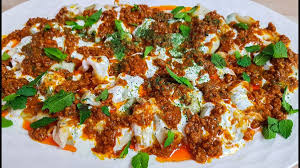

Here you can find all your favorite
food with just a little search
"Recipe of the day"
Ashak
Ashak is a traditional and popular Afghan dish made with thin dough filled with meat or vegetables, similar to dumplings or manti. It is usually served with a meat sauce and yogurt sauce, offering a delicious and flavorful taste.

Full Recipe